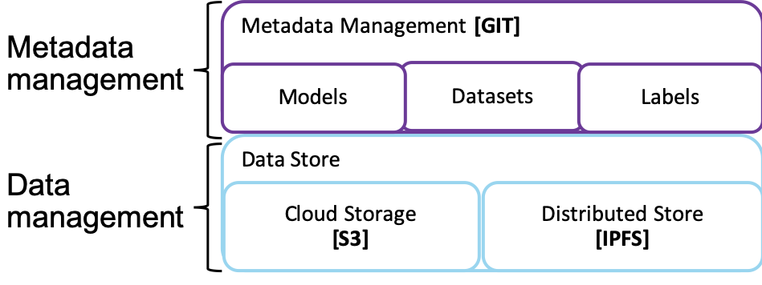
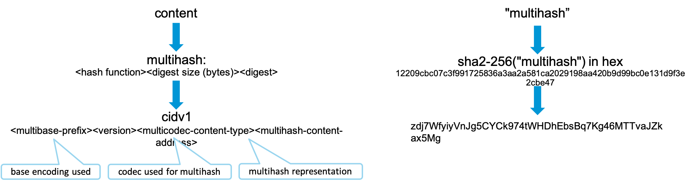
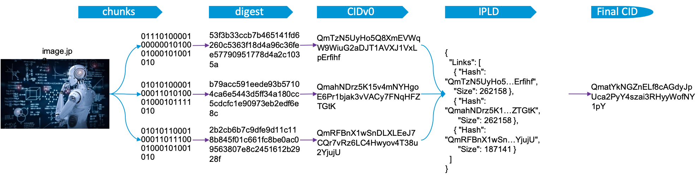
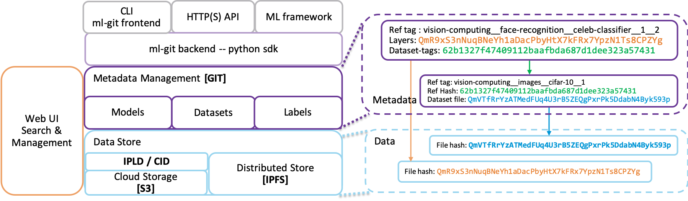

ML-Git: architecture and internals¶
Metadata & data decoupling¶
ML-Git's first design concept is to decouple the ML entities' metadata management from the actual data. So, the tool has two main layers:
-
The metadata management, is responsible for organize the ML entities (Models, Datasets, and Labels) through specification files. Then, these files are managed by a git repository to store and retrieve versions of the ML entities.
-
The data storage, is responsible to keep the files of the ML entities.
|  |
|---|
| Figure 1. Decoupling Metadata & Data Management Layers |
CAS for ML-Git¶
ML-Git has been implemented as a Content Addressable Storage (CAS), meaning that we can retrieve the information based on the content and not based on the information's location.
|  |
|---|
| Figure 2. Self-Describing Content-Addressed ID |
Figure 2 shows the basic principle of multihash to obtain a Content Identifier (CID) which is used under the hood by ML-Git to implement its CAS layer.
In a nutshell, CID is a self-describing content-addressed identifier that enables natural evolution and customization over simple and fixed cryptographic hashing schemes. An argument why multihash is a valuable feature is that any cryptographic function ultimately ends being weak. It's been a challenge for many software to use another cryptographic hash (including git). For example, when collisions have been proven with SHA-1.
Summarizing, a CID is:
- A unique identifier/hash of “multihash” content.
- Encoding the digest of the original content enabling anyone to retrieve thatcontent wherever it lies (through some routing).
- Enabling the integrity check of the retrieved content (thx to multihash and the encoded digest).
|  |
|---|
| Figure 3. IPLD - CID for a file |
There are a few steps to chunk a file to get an IPLD - CID format:
- Slide the file in piece of, say, 256KB.
- For each slice, compute its digest (currently, ml-git uses sha2-256).
- Obtain the CID for all these digests. These slice of files will be saved in a data storage with the computed CID as their filename.
- Build a json describing all the chunks of the file.
- Obtain the CID of that json. That json will also be saved in the data storage with the computed CID as its filename.
Note that this last CID is the only piece of information you need to keep to retrieve the whole image.jpg file. And last but not least, one can ensure the integrity of the file while downloading by computing the digests of all downloaded chunks and checking against the digest encoded in their CID.
Below, you can find useful links for more information on:
Why slicing files in chunks?¶
IPFS uses small chunk size of 256KB … Why?
- security - easy to DOS nodes without forcing small chunks
- deduplication - small chunks can dedup. big ones effectively dont.
- latency - can externalize small pieces already (think a stream)
- bandwidth - optimize the use of bandwidth across many peers
- performance - better perf to hold small pieces in memory. Hash along the dag to verify integrity of the whole thing.
The big DOS problem with huge leaves is that malicious nodes can serve bogus stuff for a long time before a node can detect the problem (imagine having to download 4GB before you can check whether any of it is valid). This was super harmful for bittorrent (when people started choosing huge piece sizes), attackers would routinely do this, very cheaply - just serve bogus random data. This is why smaller chunks are used in our approach.
High-level architecture and metadata¶
|  |
|---|
| Figure 4. ML-Git high-level architecture and metadata relationships |
So IPLD/CID has been implemented on top of the storage. The chunking strategy is a recommendation to turn S3 interactions more efficient when dealing with large files. This approach is also valid when using the other supported storages: Azure, Google Drive, MinIO and SFTP. It's also interesting to note that ML-Git implements a Thread pool to concurrently upload & download files to the storage. Taking into account the use of an S3 bucket, it would be possible to further accelerate ML-Git interactions with the bucket through the AWS CloudFront (not implemented yet).
ML-Git baseline performance numbers¶
CamSeq01 under ML-Git¶
- CamSeq01 size : 92MB
- Locations: website in Cambridge -- S3 bucket in us-east-1 -- me in South Brazil
- Download from website: ~4min22s
- Upload to S3 with ml-git : 6m49s
- Download to S3 with ml-git : 1m11s
MSCoco (all files) under ML-Git¶
- MSCoco :
- Size : 26GB
- Number of files : 164065 ; chunked into ~400-500K blobs (todo: exact blob count)
- Locations: original dataset: unknown -- S3 bucket in us-east-1 -- me in South Brazil
- Download from website: unknown
- Upload to S3 with ml-git : 12h30m
- Download to S3 with ml-git : 10h45m
MSCoco (zip files) under ML-Git¶
- MSCoco :
- Size : 25GB
- number of files : 3 (train.zip, test.zip, val.zip) ; 102299 blobs
- Locations: original dataset: unknown -- S3 bucket in us-east-1 -- me in South Brazil
- Download from website: unknown
- Upload to S3 with ml-git : 4h35m
- Download to S3 with ml-git : 3h39m
A couple of comments:
- Even though Python GIL is a challenge for true concurrency in the Python interpreter, it still is very helpful and provides a significant improvement for ML-Git performance.
- Not surprisingly, the number of files will affect the overall performance as it means there will be many more connections to AWS. However, ML-Git have an option to download some dataset partially (checkout with sampling) to enable CI/CD workflows for which some ML engineers may run some experiments locally on their own machine. For that reason, it is interesting to avoid downloading the full dataset if it's very large. This option is not applicable if the data set was loaded as some zip files.